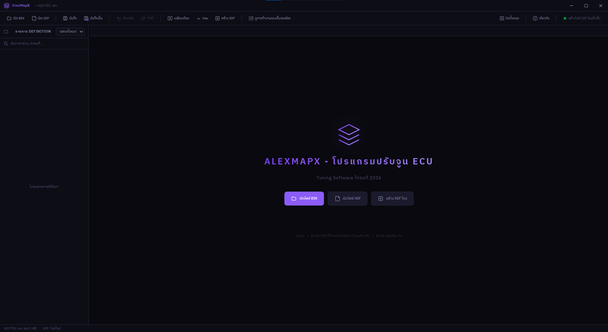
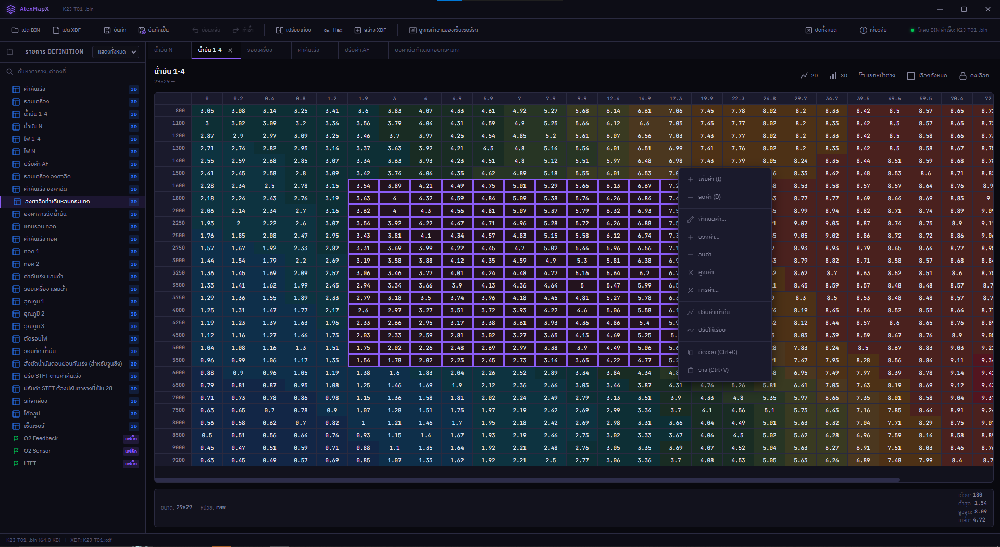
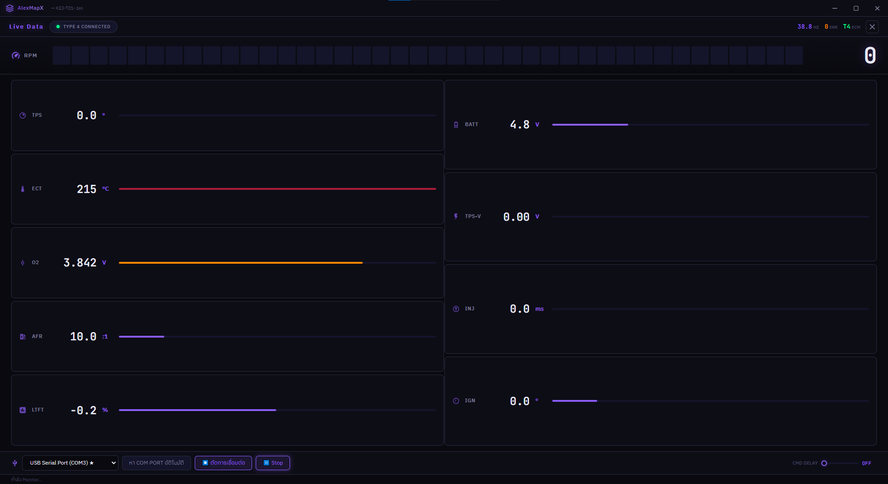
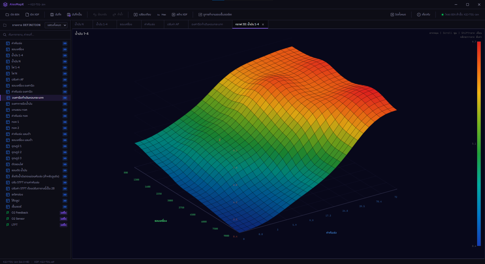

เครื่องมือจูน ECU ครบวงจร — แก้ไขตาราง 3D, ดูข้อมูล Live Data แบบเรียลไทม์, กราฟ 3 มิติ, เปรียบเทียบ BIN และอื่นๆ อีกมากมาย
เครื่องมือทุกอย่างที่คุณต้องการ รวมไว้ในโปรแกรมเดียว
แก้ไขตาราง ECU ด้วย Heatmap สีสวย พร้อมระบบ Undo/Redo และ Interpolation อัตโนมัติ
ดูข้อมูล ECM แบบสด — RPM, TPS, ECT, แรงดันแบตเตอรี่, INJ, IGN และ O2 Sensor
แสดงผลตาราง Fuel Map / Ignition Map เป็นกราฟ 3D แบบ Interactive หมุนได้ 360°
เปรียบเทียบไฟล์ BIN สองไฟล์ แสดงความแตกต่างแบบ Byte-by-byte พร้อมไฮไลท์
สร้าง Definition ใหม่ รองรับ XDF ที่เข้ารหัสของ TunerPro RT ถอดรหัสได้อัตโนมัติ
ดูข้อมูลดิบ Hex ทั้งไฟล์ BIN แก้ไขค่าได้โดยตรง เหมาะสำหรับผู้เชี่ยวชาญ
ดูตัวอย่างหน้าจอการทำงานจริงของ AlexMapX




เวอร์ชันล่าสุด: v1.0.1
อัปเดตล่าสุด: มีนาคม 2026